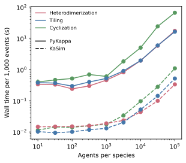

Simulation speed¶
PyKappa simulates Kappa models directly in Python. This benchmark compares it with compiled simulation using KaSim. The measurements are from a local run generated by this script.
Each system starts with n agents per species and runs for 1,000 events. Heterodimerization forms and breaks independent A:B pairs, tiling lets one agent type form connected two-dimensional structures, and cyclization joins the ends of linear chains and includes a distinction between unimolecular and bimolecular rate.
// Heterodimerization
A(x[.]), B(x[.]) <-> A(x[1]), B(x[1]) @ 1, 1
// Tiling
A(l[.]), A(r[.]) <-> A(l[1]), A(r[1]) @ 1, 1
A(u[.]), A(d[.]) <-> A(u[1]), A(d[1]) @ 1, 1
// Cyclization
A(r[.]), A(l[.]) <-> A(r[1]), A(l[1]) @ 1 {1}, 1
Now we will plot the (precomputed) simulation speeds of these models.
[1]:
import matplotlib.pyplot as plt
import pandas as pd
from matplotlib.lines import Line2D
data = pd.read_csv("simulation_speed.csv")
[2]:
colors = {
"Heterodimerization": "#cc6677",
"Tiling": "#4477aa",
"Cyclization": "#589960",
}
styles = {"PyKappa": "-", "KaSim": "--"}
fig, ax = plt.subplots(figsize=(4.5, 4))
for (engine, ruleset), points in data.groupby(["engine", "ruleset"]):
ax.errorbar(
points.agents_per_species,
points.mean_wall_time_s,
yerr=points.std_wall_time_s / points.n_runs**0.5,
color=colors[ruleset],
linestyle=styles[engine],
marker="o",
)
ruleset_legend = ax.legend(
handles=[
Line2D([0], [0], color=color, label=ruleset)
for ruleset, color in colors.items()
],
loc="upper left",
frameon=False,
fontsize="small",
)
ax.add_artist(ruleset_legend)
fig.canvas.draw()
legend_box = ruleset_legend.get_window_extent(fig.canvas.get_renderer()).transformed(
ax.transAxes.inverted()
)
ax.legend(
handles=[
Line2D([0], [0], color="black", linestyle=style, label=engine)
for engine, style in styles.items()
],
frameon=False,
fontsize="small",
loc="upper left",
bbox_to_anchor=(0, legend_box.y0),
bbox_transform=ax.transAxes,
)
ax.set(
xscale="log",
yscale="log",
xlabel="Agents per species",
ylabel="Wall time per 1,000 events (s)",
)
plt.show()

Each point is the mean of ten runs. This plot is meant to show scaling trends; actual wall time depends on the computer.